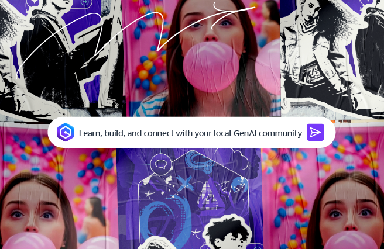

Blog 1
AWS ra mắt chuyến lưu diễn GenAI Loft nhằm thúc đẩy đổi mới sáng tạo AI trong cộng đồng khởi nghiệp và nhà phát triển toàn cầu
by Adam Seligman | on 11 JUL 2024 | in Startup Spotlight | Permalink | Share

Các công ty khởi nghiệp luôn là mạch sống của đổi mới. Họ là những người tiên phong trong việc áp dụng các công nghệ mới, và khi nói đến trí tuệ nhân tạo tạo sinh (generative AI), họ đang ở vị trí dẫn đầu để chuyển đổi các ngành công nghiệp và định hình tương lai.
Đó là lý do tại sao gần đây chúng tôi đã công bố a commitment of $230 million to accelerate the creation of generative AI applications by startups around the world, cũng như mùa thứ hai của AWS Generative AI Accelerator. Với những nỗ lực này, chúng tôi đang tăng cường cam kết hỗ trợ các nhà sáng lập startup đổi mới nhanh hơn và tái tạo trải nghiệm cùng ứng dụng của khách hàng thông qua generative AI.
Dựa trên thông báo này, hôm nay chúng tôi ra mắt AWS GenAI Lofts, một chuyến lưu diễn toàn cầu gồm các không gian hợp tác pop-up và những trải nghiệm nhập vai dành cho các startup và nhà phát triển, sẽ được tổ chức tại các trung tâm đổi mới và AI trên toàn thế giới. Sáng kiến này cũng thể hiện cam kết của chúng tôi trong việc giúp các nhà phát triển ở mọi cấp độ kỹ năng dễ dàng xây dựng và mở rộng các ứng dụng generative AI. Tương tự như AWS Startup Lofts ra mắt năm 2014, AWS GenAI Lofts cung cấp điểm đến “một cửa” cho việc giao lưu trực tiếp, nơi các startup và nhà phát triển có thể học cách sử dụng và triển khai công nghệ generative AI, cập nhật xu hướng mới nhất và kết nối với cộng đồng chuyên gia công nghệ cũng như kinh doanh rộng lớn hơn.
Với AWS GenAI Lofts, các startup, nhà phát triển và người đam mê AI có thể trực tiếp trải nghiệm các sản phẩm và dịch vụ AI từ AWS Partners và AWS, bao gồm Amazon Bedrock and Amazon Q. Các nhà phát triển sẽ có cơ hội hiểu sâu hơn về các kỹ thuật tiên tiến như xây dựng quy trình làm việc tự động hóa (agentic workflows), tinh chỉnh mô hình nền tảng (foundation models), và khám phá sâu hơn các trường hợp sử dụng cùng bản demo về generative AI. Khách tham quan có thể tham gia các buổi chia sẻ độc quyền được dẫn dắt bởi các chuyên gia trong ngành, kết nối với các nhà đầu tư và lãnh đạo trong lĩnh vực generative AI, đồng thời được các chuyên gia giải đáp thắc mắc trực tiếp tại chỗ.
Các địa điểm pop-up sẽ mở cửa trong thời gian lên đến 12 tuần tại các trung tâm đổi mới toàn cầu, bao gồm:
- AWS GenAI Loft | Bengaluru: July 29, 2024
- AWS GenAI Loft | San Francisco: August 12, 2024
- AWS GenAI Loft | São Paulo: September 2, 2024
- AWS GenAI Loft | London: September 30, 2024
- AWS GenAI Loft | Paris: October 8, 2024
Khách tham quan sẽ được trải nghiệm các hoạt động nhập vai giới thiệu các dự án generative AI tiên tiến, workshop, tọa đàm thân mật (fireside chats), và các chương trình thực hành trực tiếp do các chuyên gia AI và đối tác AWS dẫn dắt như Anthropic, Cerebral Valley, and Weights & Biases, cùng nhiều tổ chức khác. Mỗi thành phố sẽ có sự góp mặt của các chuyên gia và nhà lãnh đạo tư duy (thought leaders) hàng đầu trong lĩnh vực AI, bao gồm các nhà khoa học dữ liệu học máy. Những buổi này mang đến cơ hội tiếp cận một số bộ óc xuất sắc nhất trong lĩnh vực với các sự kiện diễn ra hàng ngày. Khách tham quan cũng có thể tận dụng khu vực Ask an Expert Bar để được các AWS Solutions Architects hỗ trợ và trả lời câu hỏi trực tiếp.
Trong khi mỗi GenAI Loft pop-up đang mở cửa, các startup và nhà phát triển có thể tận dụng các chương trình, workshop và công cụ, bao gồm:
Experiential Series
Series này không chỉ nhấn mạnh các diễn giả nổi tiếng, mà còn kết hợp việc nhìn thấy, cảm nhận, thậm chí chạm vào generative AI thông qua các ứng dụng thực tế. Các trải nghiệm bao gồm xem các tác phẩm nghệ thuật robot nhập vai được tạo ra, nêu bật các nhân vật ảnh hưởng văn hóa đang sử dụng generative AI để làm giàu trải nghiệm. Những buổi “Artist-in-Residence” này tương tác và nhập vai, mang công nghệ generative AI đến cuộc sống.
Bootcamps
Bootcamps là các chương trình nhập vai kéo dài ba ngày được thiết kế để trang bị cho các nhà sáng lập và nhà phát triển các kỹ năng, khung công tác và tài nguyên mới để thúc đẩy kinh doanh của họ phát triển. Các chương trình được điều chỉnh theo nhu cầu của cả các nhà sáng lập kinh doanh và kỹ thuật, kết hợp các workshop thực hành và các buổi tương tác.
Immersion Days
AWS Solution-Focused Immersion Days là một loạt sự kiện được thiết kế để cung cấp cho nhân viên startup và nhà phát triển trải nghiệm thực hành sử dụng các dịch vụ generative AI và khám phá các phương pháp hiệu quả để giúp giải quyết vấn đề thông qua generative AI.
Startup Talks
Startup Talks cung cấp trải nghiệm học tập toàn diện cho các nhà sáng lập startup, bao gồm các khía cạnh kỹ thuật, kinh doanh và cá nhân của hành trình kinh doanh, đồng thời kết hợp các quan điểm của các nhà đầu tư, đối tác ngành và các chuyên gia startup. Những buổi nói chuyện này sẽ có một loạt nội dung được dẫn dắt bởi các nhà lãnh đạo và nhà sáng lập từ một số startup hàng đầu trên thế giới.
Để tìm hiểu khi nào chuyến lưu diễn AWS GenAI Loft sắp đến thành phố gần bạn, nhận chi tiết chi tiết về lập trình và đăng ký, hãy truy cập aws.amazon.com/startups/lp/aws-gen-ai-lofts.


|
Adam Seligman là Phó Chủ tịch Generative Builders tại Amazon Web Services (AWS), giám sát các dịch vụ và công cụ cho các nhà phát triển web front-end và mobile, bao gồm AWS Amplify, AWS AppSync và các dịch vụ low-code và no-code mới của AWS. Trong vai trò này, Adam chịu trách nhiệm về các sản phẩm cung cấp trải nghiệm tuyệt vời, được cung cấp bởi trí tuệ nhân tạo tạo sinh, cho các nhà phát triển và các đội của họ. Với hơn 20 năm kinh nghiệm trong ngành công nghệ làm việc với các nhà phát triển, Adam đóng vai trò là một điều hành viên hướng ngoài đại diện cho AWS trong cộng đồng nhà phát triển và khách hàng. |